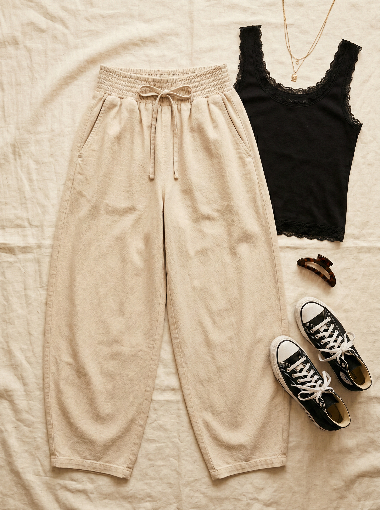
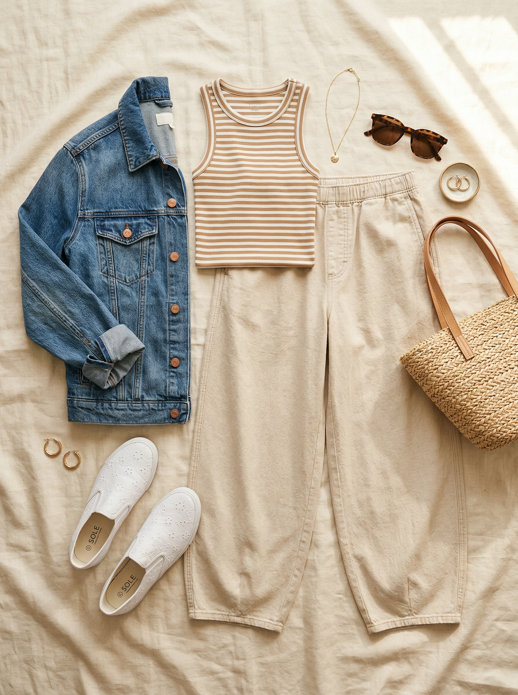
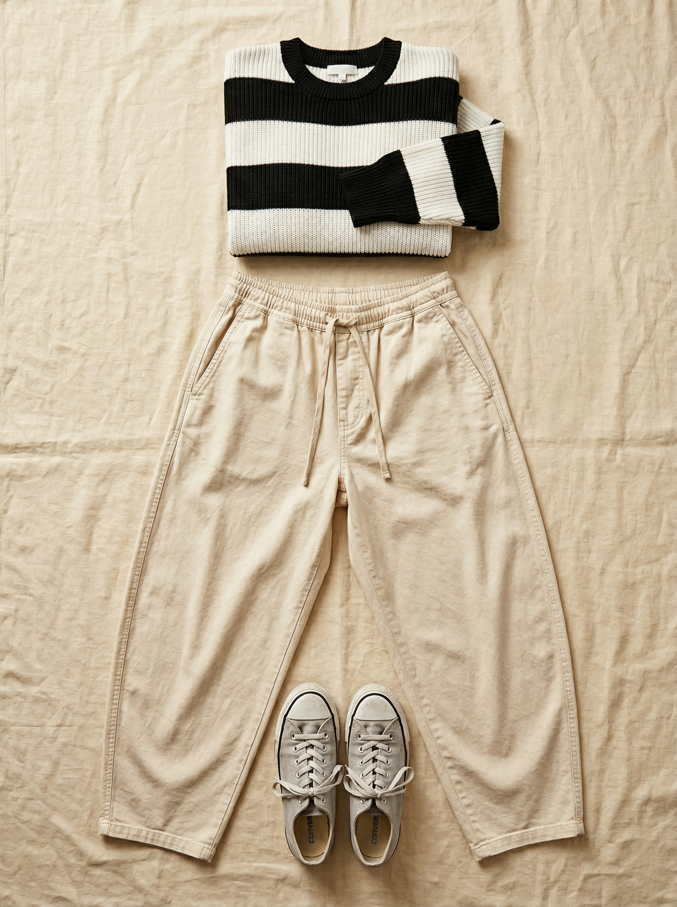

Reese Barrel Leg Pull-On Pants
Barrel leg is THE pant silhouette of 2026 — wide through the hip and thigh, tapering at the ankle — and this 100% cotton version with a smocked pull-on waist makes it the most comfortable trendy pant you'll ever wear. The natural/oat color is a warm, versatile neutral that works spring through fall.
Shop NowWhy This Pick
353+ reviews don't lie — these are a cult favorite for a reason. The barrel leg silhouette is the biggest pant trend right now, and this version does it in 100% cotton with a pull-on smocked waist that makes busy mornings effortless. The warm oat/natural color fills a gap — something lighter and softer than jeans. Athletic builds look incredible in barrel legs because the wide hip balances broader shoulders beautifully.
3 Ways to Wear It
Styled with pieces already in your closet


